Pra-Kata
Terminologi
Transaksi
Manufacturing Order
Penjelasan Manufacturing Order
Informasi pada Manufacturing Order dibagi menjadi beberapa area, diantaranya:
- Header
- Tab Consumend Product
- Tab Finished Product
- Tab Scheduled Product
- Tab Extra Information
- Tab Workflow Policy
- Tab Notes
- Tab Byproduct
- Tab Applied Cost
HEADER

Smart Button

Tombol-tombol yang berfungsi sebagai Shortcut untuk masuk ke dalam menu yang berkaitan dan juga sebagai pemberi informasi mengenai seberapa banyak data, total, dll
# Manufacturing Order
Nomor Manufacturing Order.
Type
Mendefinisikan tipe dari Manufacturing Order.
Product
Mendefinisikan produk jadi yang dihasilkan dari proses Manufacturing Order.
Product Quantity

- 1.Quantity: Mendefinisikan jumlah produk jadi yang dihasilkan dari proses Manufacturing Order.
- 2.UoM: Mendefinisikan satuan produk jadi yang dihasilkan dari proses Manufacturing Order.
Product UoS Quantity

- 1.Quantity: Mendefinisikan jumlah produk jadi yang dihasilkan dari proses Manufacturing Order.
- 2.UoS: Mendefinisikan satuan produk jadi yang dihasilkan dari proses Manufacturing Order.
Scheduled Date
Menjadwalkan tanggal proses Manufacturing Order.
Bill of Material
Mendefinisikan Bill of Material.
Responsible
Mendefinisikan user yang bertanggung jawab terkait proses Manufacturing Order.
Source Document
Mendefinisikan dokumen terkait proses Manufacturing Order.
Operating Units
Catatan: Isian ini hanya untuk user yang memiliki group Multi Operating Unit
Mendefinisikan operating unit terkait proses Manufacturing Order.
Project
Mendefinisikan projek terkait proses Manufacturing Order.
Raw Materials Location
Mendefinisikan lokasi bahan baku yang akan digunakan
Auto Create Procurement Group
#TODO
Raw Material Procurement Group
#TODO
Finished Products Location
Mendefinisikan lokasi barang jadi yang akan digunakan
Use Raw Material Procurement Group
#TODO
Finished Good Procurement Group
#TODO
TAB CONSUMED PRODUCT

Products to Consume
Mendefinisikan produk(bahan baku) "yang akan digunakan" untuk proses membuat produk(barang jadi). Isian ini dapat diisi otomatis oleh Odoo berdasarkan Bill of Material yang dipilih atau menambahkannya secara manual dengan mengklik tombol Add an item
Consumed Products
Mendefinisikan produk(bahan baku) "yang sudah digunakan" untuk proses membuat produk(barang jadi).
TAB FINISHED PRODUCT

Manual Production Lot
#TODO
Concatenate Lots Components
#TODO
Products to Produce
Mendefinisikan produk(barang jadi) "yang akan diproduksi".
Produced Products
Mendefinisikan produk(barang jadi) "yang sudah diproduksi".
TAB SCHEDULED PRODUCT


Name
Mendefinisikan nama Scheduled Goods
Product
Mendefinisikan produk Scheduled Goods
Reserved Lot
#TODO
Product Quantity
Mendefinisikan kuantitas produk Scheduled Goods
Added Post-startup
#TODO
Product Unit Of Measure
Mendefinisikan satuan produk Scheduled Goods
Product UoS Quantity
Mendefinisikan kuantitas produk UoS Scheduled Goods
Product UoS
Mendefinisikan produk UoS Scheduled Goods
TAB EXTRA INFORMATION

Priority
Mendefinisikan prioritas terkait proses Manufacturing Order
Start Date
Diisi otomatis oleh odoo. Mendefinisikan tanggal dimulainya proses Manufacturing Order
End Date
Diisi otomatis oleh odoo. Mendefinisikan tanggal berakhirnya proses Manufacturing Order
Manual Start Date
Mendefinisikan secara manual tanggal dimulainya proses Manufacturing Order
Manual End Date
Mendefinisikan secara manual tanggal berakhirnya proses Manufacturing Order
Free Serialisation
#TODO
Sale Reference
Mendefinisikan referensi penjualan
Sale Name
Mendefinisikan nama penjualan
Product Move
Mendefinisikan pergerakan stock/produk
Manufacturing Request
Mendefinisikan permintaan produksi
TAB WORKFLOW POLICY

Can Confirm
Diisi otomatis oleh Odoo. Jika aktif, maka user yang membuka data Manufacturing Order dapat melakukan Konfirmasi Manufacturing Order.
Can Produce
Diisi otomatis oleh Odoo. Jika aktif, maka user yang membuka data Manufacturing Order dapat melakukan Produksi Finished Goods.
Can Check Availability
Diisi otomatis oleh Odoo. Jika aktif, maka user yang membuka data Manufacturing Order dapat melakukan Cek Ketersediaan Raw Material.
Can Force Reservation
Diisi otomatis oleh Odoo. Jika aktif, maka user yang membuka data Manufacturing Order dapat melakukan Force Reservation
Can Start
Diisi otomatis oleh Odoo. Jika aktif, maka user yang membuka data Manufacturing Order dapat melakukan Memulai Manufacturing Order.
Can Cancel
Diisi otomatis oleh Odoo. Jika aktif, maka user yang membuka data Manufacturing Order dapat melakukan Membatalkan Manufacturing Order.
TAB NOTES

Notes
Catatan/Informasi tambahan terkait Manufacturing Order
TAB BYPRODUCT


Byproduct
#TODO
Join Cost Method
#TODO
Join Cost
#TODO
Multiplier
#TODO
Byproduct Cost
#TODO
TAB APPLIED COST


Date
Mendefinisikan tanggal Applied Cost
Applied Cost Category
Mendefinisikan kategori Applied Cost
Product
Mendefinisikan produk Applied Cost
Description
Mendefinisikan deskripsi Applied Cost
Unit Price
Mendefinisikan harga satuan Applied Cost
Qty.
Mendefinisikan kuantitas Applied Cost
UoM
Mendefinisikan satuan Applied Cost
UoM
Menginformasikan total Applied Cost
Debit Account
Mendefinisikan akun debet
Debit Account
Mendefinisikan akun kredit
Jurnal
Mendefinisikan jurnal yang digunakan
Joernal Entry
Mendefinisikan entri jurnal
Membuat Manufacturing Order
A. INPUT
(tidak ada instruksi khusus)
B. LANGKAH KERJA
- Buka menu Manfacturing -> Manufacturing -> Manufacturing Order
- Klik tombol Create pada bagian atas-kiri form.
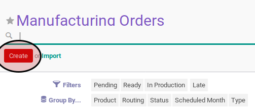
- Pilih Type. Harus diisi.
- Pilih Product. Harus diisi.
- Isi Product Quantity. Harus diisi.
- Isi Product Quantity UoM. Harus diisi.
- Isi Schedule Date Harus diisi.
- Pilih Bill of Material. Harus diisi.
- Pilih Responsible. Harus diisi.
- Isi Source Document. Tidak harus diisi.
- Pilih Operating Unit. Tidak harus diisi.
- Pilih Raw Material Location. Harus diisi.
- Aktifkan Auto Create Procurement Group jika dibutuhkan.
- Pilih Raw Material Procurement Group. Tidak harus diisi.
- Pilih Finished Products Location. Harus diisi.
- Aktifkan Use Raw Material Procurement Group jika dibutuhkan.
- Pilih Finished Good Procurement Group. Tidak harus diisi.
- Klik tombol Save pada bagian atas-kiri form.
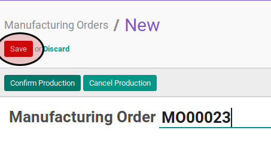
C. OUTPUT
- Data manufacturing order akaan terbuat dengan status New
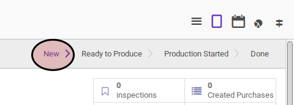
Memodifikasi Manufacturing Order
A. INPUT
- Data manufacturing order yang akan dimodifikasi harus memiliki status New
B. LANGKAH KERJA
- Buka menu Manfacturing -> Manufacturing -> Manufacturing Order. Abaikan jika sudah berada pada menu yang dimaksud.
- Buka data manufacturing order yang akan dimodifikasi. Abaikan jika data sudah dibuka.
- Klik tombol Edit pada bagian atas-kiri form.

- Pilih dan sesuaikan Type jika dibutuhkan. Harus diisi.
- Pilih dan sesuaikan Product jika dibutuhkan. Harus diisi.
- Isi dan sesuaikan Product Quantity jika dibutuhkan. Harus diisi.
- Isi dan sesuaikan Product Quantity UoM jika dibutuhkan. Harus diisi.
- Isi dan sesuaikan Schedule Date jika dibutuhkan. Harus diisi.
- Pilih dan sesuaikan Bill of Material jika dibutuhkan. Harus diisi.
- Pilih dan sesuaikan Responsible jika dibutuhkan. Harus diisi.
- Isi dan sesuaikan Source Document jika dibutuhkan. Tidak harus diisi.
- Pilih dan sesuaikan Operating Unit jika dibutuhkan. Tidak harus diisi.
- Pilih dan sesuaikan Raw Material Location jika dibutuhkan. Harus diisi.
- Aktifkan Auto Create Procurement Group jika dibutuhkan.
- Pilih dan sesuaikan Raw Material Procurement Group jika dibutuhkan. Tidak harus diisi.
- Pilih dan sesuaikan Finished Products Location jika dibutuhkan. Harus diisi.
- Aktifkan Use Raw Material Procurement Group jika dibutuhkan.
- Pilih dan sesuaikan Finished Good Procurement Group jika dibutuhkan. Tidak harus diisi.
- Klik tombol Save pada bagian atas-kiri form.
C. OUTPUT
- Data manufacturing order berubah sesuai dengan perubahan yang dilakukan.
Menghapus Manufacturing Order
A. INPUT
- Data manufacturing order yang akan dihapus harus memiliki status New
B. LANGKAH KERJA
- Buka menu Manfacturing -> Manufacturing -> Manufacturing Order. Abaikan jika sudah berada pada menu yang dimaksud.
- Buka data manufacturing order yang akan dihapus. Abaikan jika data sudah dibuka.
- Klik tombol More pada bagian atas-tengah form.
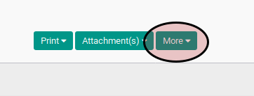
- Klik tombol Delete pada drop-down yang muncul dari tombol More.
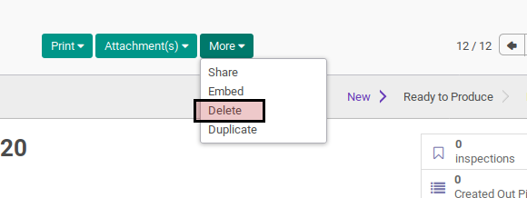
- Klik tombol Ok pada dialog konfirmasi penghapusan.
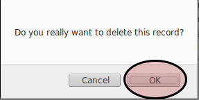
C. OUTPUT
- Data manufacturing order akan terhapus.
Konfirmasi Manufacturing Order
A. INPUT
- Data manufacturing order yang akan dikonfirmasi harus memiliki status New
B. LANGKAH KERJA
- Buka menu Manfacturing -> Manufacturing -> Manufacturing Order. Abaikan jika sudah berada pada menu yang dimaksud.
- Buka data manufacturing order yang akan dikonfirmasi. Abaikan jika data sudah terbuka.
- Klik tombol Confirm Production pada bagian atas-kiri form.
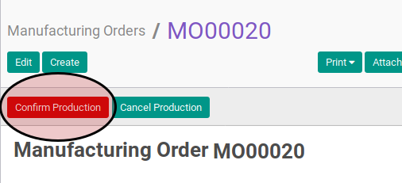
C. OUTPUT
- Status manufacturing order akan berubah menjadi Awaiting Raw Material.
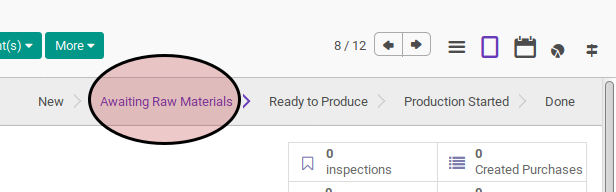
Membatalkan Manufacturing Order
Menambahkan Raw Material
A. INPUT
- Data manufacturing order yang akan dikonfirmasi harus memiliki status New atau Awaiting Raw Material atau Production Started.
B. LANGKAH KERJA
- Buka menu Manfacturing -> Manufacturing -> Manufacturing Order. Abaikan jika sudah berada pada menu yang dimaksud.
- Buka data manufacturing order yang akan ditambahkan raw material. Abaikan jika data sudah terbuka.
- Buka tab Consumed Product.
- Klik tombol Add extra raw material pada bagian bawah tabel Products To Consume
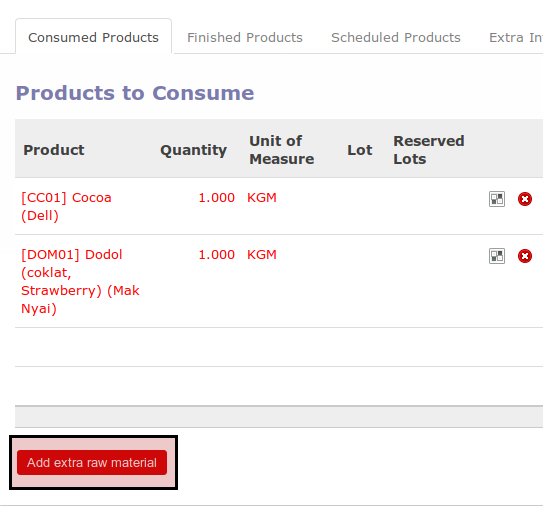
- Pop-up Addition View akan muncul.
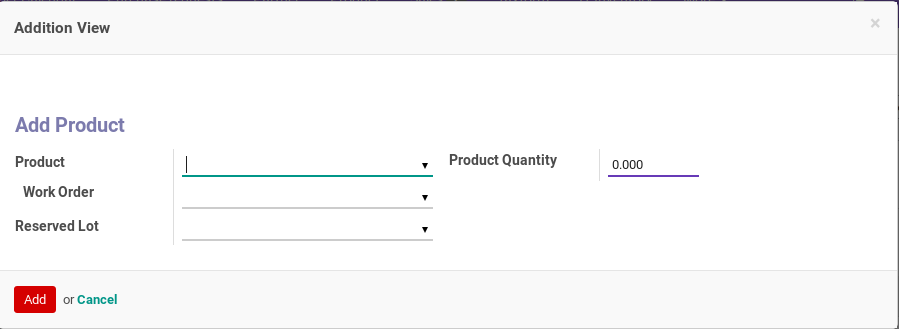
- Pilih Product pada pop-up Addition View. Harus diisi.
- Isi Quantity pada pop-up Addition View. Harus diisi.
- Klik tombol Add pada bagian bawah-kiri pop-up Addition View
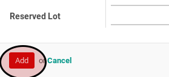
- Ulangi langkah ke-4 untuk setiap bahan baku yang akan ditambahkan.
C. OUTPUT
(Tidak ada instruksi khusus)
Cek Ketersediaan Raw Material
A. INPUT
- Data manufacturing order yang akan dikonfirmasi harus memiliki status Awaiting Raw Material.
B. LANGKAH KERJA
- Buka menu Manfacturing -> Manufacturing -> Manufacturing Order. Abaikan jika sudah berada pada menu yang dimaksud.
- Buka data manufacturing order yang akan dikonfirmasi. Abaikan jika data sudah terbuka.
- Klik tombol Check Availability pada bagian atas-kiri form.
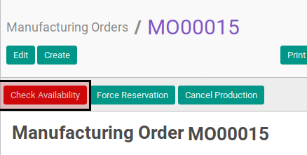
C. OUTPUT
- Apabila semua raw material sudah tersedia maka status manufacturing order akan berubah menjadi Ready To Produce.
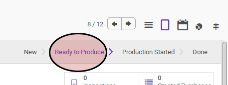
- Apabila semua raw material belum tersedia tersedia semua maka status manufacturing order akan tetap Awaiting Raw Material.
Memulai Manufacturing Order
A. INPUT
- Data manufacturing order yang akan dimulai harus memiliki status Ready To Produce.
B. LANGKAH KERJA
- Buka menu Manfacturing -> Manufacturing -> Manufacturing Order. Abaikan jika sudah berada pada menu yang dimaksud.
- Buka data manufacturing order yang akan dimulai. Abaikan jika data sudah terbuka.
- Klik tombol Mark As Started pada bagian atas-kiri form.
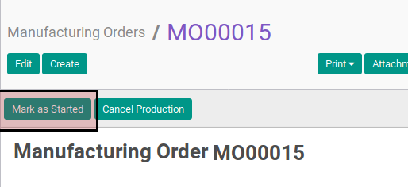
C. OUTPUT
- Status manufacturing order akan berubah menjadi Production Started.
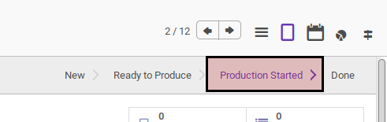
Konsumsi Raw Material
A. INPUT
- Data manufacturing order yang akan dikonsumsi harus memiliki status Production Started.
B. LANGKAH KERJA
- Buka menu Manfacturing -> Manufacturing -> Manufacturing Order. Abaikan jika sudah berada pada menu yang dimaksud.
- Buka data manufacturing order yang akan dikonfirmasi. Abaikan jika data sudah terbuka.
- Buka tab Consumed Product.
- Klik icon Panah Ke Kanan pada data bahan baku yang akan dikonsumsi.
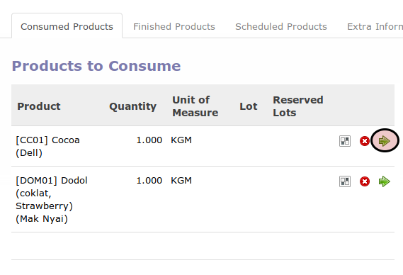
- Pop-up Consume Move akan muncul
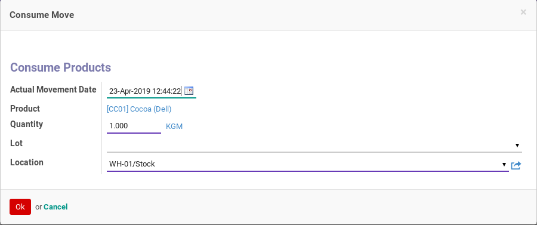
- Isi Actual Movement Date pada pop-up Consume Move. Harus diisi.
- Isi Quantity pada pop-up Consume Move. Harus diisi.
- Klik tombol Ok pada bagian bawah-kiri pop-up Consume Move
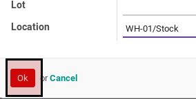
- Ulangi langkah ke-4 untuk setiap bahan baku yang akan dikonsumsi.
C. OUTPUT
(Tidak ada instruksi khusus)
Produksi Finished Goods
A. INPUT
- Data manufacturing order yang akan diproduksi finished goodnya harus memiliki status Production Started.
B. LANGKAH KERJA
- Buka menu Manfacturing -> Manufacturing -> Manufacturing Order. Abaikan jika sudah berada pada menu yang dimaksud.
- Buka data manufacturing order yang akan dikonfirmasi. Abaikan jika data sudah terbuka.
- Buka tab Finished Product.
- Klik icon Panah Ke Kanan pada data barang jadi yang akan diproduksi.
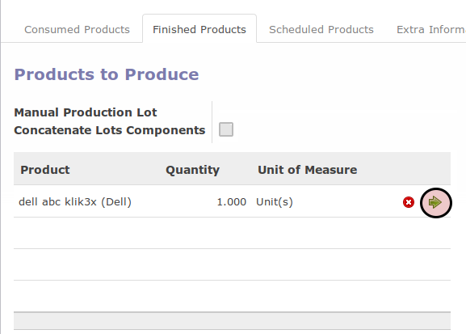
- Pop-up Produce Finished Good akan muncul.
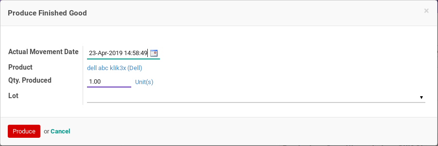
- Isi Actual Movement Date pada pop-up Produce Finished Good. Harus diisi.
- Isi Quantity pada pop-up Produce Finished Good. Harus diisi.
- Klik tombol Ok pada bagian bawah-kiri pop-up Produce Finished Good.
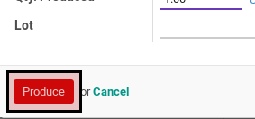
- Ulangi langkah ke-4 untuk setiap hasil produksi yang akan diproduksi.
C. OUTPUT
(Tidak ada instruksi khusus)
Menyelesaikan Manufacturing Order
A. INPUT
- Data manufacturing order yang akan diselesaikan harus memiliki status Production Started
B. LANGKAH KERJA
- Buka menu Manfacturing -> Manufacturing -> Manufacturing Order. Abaikan jika sudah berada pada menu yang dimaksud.
- Buka data manufacturing order yang akan diselesaikan. Abaikan jika data sudah terbuka.
- Klik tombol Close Production pada bagian atas-kiri form.
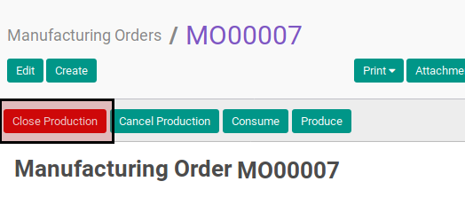
C. OUTPUT
- Status manufacturing order akan berubah menjadi Done.
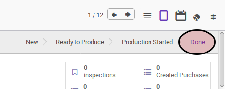